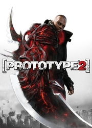

|  | |
| Tiempo de juego | No Jugado |
| Última actividad | Nunca |
| Añadido | 11/6/2024 15:27:56 |
| Modificado | 11/17/2024 14:35:04 |
| Estado de finalización | No Jugado |
| Librería | Playnite |
| Fuente | 1 TB 1 |
| Plataforma | PC (Windows) |
| Fecha de lanzamiento | 4/24/2012 |
| Puntuación de la Comunidad | |
| Puntuación de la Crítica | 77 |
| Puntuación de usuario | |
| Género | Action-adventure |
| Desarrollador | Radical Entertainment |
| Editor | Activision |
| Característica | Single-player |
| Enlaces | Wikipedia MobyGames MobyGames IMDb |
| Tag | [People] artist: Christopher Sjöholm [People] composer: Scott R. Morgan [People] designer: Matthew Armstrong [People] director: Tom Legal [People] producer: Kenneth Rosman [People] programmer: Bryan Brandt [People] writer: Dan Jolley |
Prototype 2 (stylized as [PROTOTYPE2]) is a 2012 action-adventure video game developed by Radical Entertainment and published by Activision, and the sequel to 2009's Prototype. First announced at the 2010 Spike VGA Awards, it was released in April 2012 for the PlayStation 3 and Xbox 360, and in July 2012 for Microsoft Windows. In July 2015, the game was re-released alongside its predecessor as the Prototype Biohazard Bundle for the PlayStation 4 and Xbox One. Separate versions of the two games became available in August 2015. Prototype 2 shifts the focus towards a new protagonist, former U.S. Marine Sergeant James Heller, who seeks revenge on Alex Mercer, the protagonist of the original Prototype, after the death of his family during a new outbreak of the Blacklight virus in Manhattan, which was started by Mercer. Heller is infected with a strain of the virus that allows him to keep his humanity while granting him powers similar to Mercer's, including shapeshifting and consuming people, which he uses in his mission to stop Mercer and the Blacklight outbreak.
Upon release, Prototype 2 received generally positive reviews for the PlayStation 3 and Windows versions, and mixed reviews for the Xbox 360 version. Most critics praised it for its entertaining gameplay and improvements over its predecessor in certain areas, although the game's repetitive nature and the main storyline attracted criticism. While the game was a top seller at the time of release, its dwindling sales eventually resulted in the downsizing of Radical Entertainment. A tie-in comic book miniseries, which bridges the gap between the two Prototype games, was published by Dark Horse Comics.
Similarly to its predecessor, Prototype 2 is an action-adventure game played from a third-person perspective and set in an open world based on modern-day Manhattan. Like Alex Mercer in the first game, the player character, James Heller, can shapeshift and assume other people's identities and memories by consuming them, although in the sequel this has become more tactical. Due to Blackwatch's actions in the Yellow Zone, if the player assumes the role of a soldier, people will react to him in a way that shows that they want nothing to do with him. To make sure that enemies do not overwhelm the player, a dodging system and new, more realistic AI were introduced. Heller is able to use weapons in the game, such as ripping the Gatling cannon off a tank and using it against enemies. He can also sneak up on unsuspecting human enemies and inject them with the Blacklight virus, turning them into a "BioBomb". Heller also possesses superhuman strength and agility, near-invulnerability to harm, near-flight leaping and gliding, infinite stamina, increased speed, and a sonar sense. The sonar includes a new pulse ability that highlights the key features of an environment to make it easier for the player to find someone, instead of looking in a large crowd for a person with an icon above their head. Before release, the developers stated that the powers in Prototype 2 would be more meaningful than in the first game, appearing as mutations and upgrades that let players decide how they want to play as Heller.
To give players more power in the game, the developers have added tendrils which sprout from Heller's arms and can be used for a variety of purposes, like smashing objects into other objects, such as a car into a tank, utilising the 'Black Hole' attack. Players are also able to dismember enemies, a force that becomes more useful as the game progresses. There are many more ways to kill enemies, ranging from throwing a car at a group of soldiers, hacking off a mutant's head or using powers. Consuming people has not changed since the original Prototype, with the exception of some enemies, which are consumed upon grabbing them (e.g. Supersoldiers, Brawlers). Heller can additionally control a pack of Brawlers (similar to Prototype's Hunters) to attack anything he desires (note: this power is limited to main variant of Brawler). In the game, players can no longer find 'Events' throughout NYZ (New York Zero, the name given to New York after the Blacklight outbreak), instead starting side-missions by hacking into Blacknet, Blackwatch's system that details military operations in the three areas of NYZ. Heller can choose from a small list of missions at each terminal, allowing him to find operations that he can disrupt or take control of for his own purposes and find important people that will allow him to learn more about what he has become because of the Blacklight virus. It will also help him find out more about Alex Mercer and how he is connected to his family's death. The missions that are selectable can be sidequests or extensions to one of the main quests.
The story of Prototype 2 begins in 2009, one year after the events of the first game, when U.S. Marine Sergeant James Heller, returning from a tour in Iraq, discovers his wife and daughter to be declared dead, causing him to rejoin the military in the fight for NYZ against the Blacklight virus. Heller finds out that Alex Mercer, who stopped the original Blacklight infection in 2008, is behind the new outbreak, having lost his faith in humanity and wishing to wipe it out to usher in a new golden age. Heller pursues vengeance against Mercer for the death of his family, but during a confrontation between the two, Heller is infected with Mercer's strain of Blacklight that imbues him with superhuman abilities, and blacks out. He later awakens in a Yellow Zone lab where Gentek scientist Dr. Anton Koenig and Blackwatch Col. Douglas Rooks are experimenting on him. Heller escapes and is confronted by Mercer, who claims that the former should take his revenge on Gentek and Blackwatch, since they are responsible for recreating and cultivating the Blacklight virus. Revealing his plans to take down Gentek and Blackwatch, Mercer offers a truce to Heller. Unsure of Mercer's intentions, Heller goes to his local pastor, Father Luis Guerra, for advice and help.
Using information supplied by Guerra, Heller hacks into Blacknet Terminals to find out about and sabotage their operations. Gradually consuming his way through Blackwatch, Heller eventually finds and confronts Koenig, who claims to be on his side and reveals Blackwatch's super-soldier program, codenamed "Project :Orion". Heller prevents the project's progress by killing a super-soldier who was injected with his DNA, as well as the DNA of the special infected type known as a "Hydra". After consuming one of the head scientists, Heller discovers that Koenig was observing him in order to find his weaknesses. Enraged at Koenig's betrayal, Heller tracks him down, and discovers that he has powers similar to his and Mercer's, and is one of several "Evolved" agents planted in Gentek and Blackwatch by Mercer. After defeating and consuming Koenig, Mercer reveals to Heller that he intends to recruit him in an attempt to control NYZ. His doubts growing, Guerra then shows Heller a video tape of Mercer releasing the virus for the second time in Penn Station.
Enraged at Mercer's deception, Heller sets off to the Green Zone to hunt down Mercer's henchmen, including an Evolved agent in Gentek named Sabrina Galloway; upon confronting Galloway, however, Heller reluctantly teams up with her when she reveals she can help him take down Mercer. With Galloway's help, Heller finds that Mercer plans to infect the entire world through "Whitelight", a contaminated vaccine released by Gentek that accelerates the infection.
Frustrated with Heller sabotaging his plans, Mercer confronts him. The two fight, and Mercer easily overpowers Heller. However, Mercer is unable to consume Heller due to his 'annoyingly resistant DNA', solidifying Heller's status as a virus-human hybrid. Mercer flees, and Heller receives a call from Guerra, who informs him that a horde of infected have amassed outside his apartment. Heller rushes to save Guerra, only to find him already dead. Heller uses Guerra's phone to reach Athena, Guerra's contact, who is revealed to be Mercer's sister Dana. Dana explains that Heller's daughter, Maya, is still alive, prompting Heller to head for the Red Zone to save her. After Heller prevents Blackwatch's second attempt to level Manhattan, Rooks takes Maya hostage in the Gentek Headquarters. Heller storms the base and confronts Rooks, who reveals that he also has a daughter and grants Heller free passage to leave NYZ.
Before Heller can take Maya, Galloway arrives and kidnaps her, having joined forces with Mercer once more. Upon confronting Mercer, he reveals that he plans to solve international conflicts and world problems by infecting the entire human race, effectively creating a superorganism, with Maya's unique DNA acting as the catalyst. After Mercer absorbs Galloway and the remaining Evolved, the two fight once more. Heller defeats Mercer, and consumes him. Subsequently, Heller wipes out the infected in NYZ along with most of the Blacklight virus; using Mercer's absorbed memories, Heller then locates and frees Maya and Dana from a vault. The game ends with the three overlooking New York, before Dana questions what to do next.
Development of the game started soon after the success of the first game and was in development for three years. The game was first shown at the Spike 2010 VGA Awards in December. The game was revealed to be the main focus of the April 2011 EGM Issue. It was displayed in EGM and EGMI in 2011 revealing many new details about the game's plot, characters and gameplay. The game's graphics have been completely updated with buildings being much more detailed and deformation of vehicles, mutants and humans being much more visual. The game was also partially written by Dan Jolley.
Prototype 2 was built using the Titanium 2.0 game engine.
Prior to the game's launch, Radical Entertainment announced Radnet for Prototype 2 users who would either pre-order the game or buy a new copy. Radnet offers the player weekly in game abilities, events, challenges and avatar items. Upon the launch of the game, first-run copies and pre-ordered copies of the game would include 55 pieces of additional add-on downloadable content (DLC) at no extra cost. Included in the pre-order/launch content was in-game events, additional and optional challenges, avatar items for the Xbox 360 and themes for the PlayStation 3 and behind the scenes videos. In order to make Radnet coherent to players, Activision announced that the events playable in Radnet would be outside of the game's main storyline.
The 55 pieces of DLC would be launched by Radical weekly from April 24 until June 7, with content available forever once unlocked. To earn the rewards given for an event or a challenge for a given week of DLC, players had to achieve at least a bronze medal in events and a minimal score threshold in challenges. To make Radnet more accessible, content will be available to all profiles on the console where Radnet was unlocked.
To promote the game, Radical Entertainment launched a Facebook app for the game. The app is called Blacknet, named after the game's mission system, and it allows fans to work together to "hack" the interface. Hacking it will allow the fans to uncover a series of videos, interviews and other behind the scenes content, all in the run up to the game's launch. Also via Facebook, Radical unveiled that they would announce something huge for Prototype 2 at ComicCon. This was the ability to let people play the game, they also released the first of three trailers detailing the story of Prototype 2. At ComicCon, Activision held a raffle in which the winner won either the jacket worn by James Heller, or Alex Mercer's jacket; and a custom skinned Xbox 360. At ComicCon, Activision employees were handing out Prototype 2 themed merchandise, including T-shirts, posters, giant foam Heller Blade Arms and more materials based on the game.[citation needed] Activision released for iOS an official game titled ProtoSlice, available free to download. Activision has released a couple of trailers, Radical Entertainment's team also went to Paris to promote the game in February 2012, and had a video interview with JeuxVideo Live.
A popular commercial for the release of the game used the song "Hurt", as sung by Johnny Cash, in the background.
Ahead of the game's release, Radical Entertainment revealed that, just like the first game, Prototype 2 would receive a comic book prequel miniseries that bridges the gap between the two games. Published by Dark Horse Comics, the miniseries comprises three volumes, each consisting of two issues. The first volume, titled The Anchor, follows Alex Mercer as he travels across the globe to eradicate any remaining traces of the Blacklight virus while questioning his own morality and whether the virus has turned him into humanity's killer or its savior. Alex slowly begins to decide that he is the planet's savior and will usher it into a new age of prosperity once he wipes out humanity. While he temporarily changes his mind after falling for a woman, that woman ends up betraying him, causing Alex to vow to wipe out humanity. He then returns to New York City and turns it into New York Zero (NYZ) once again by unleashing the Blacklight virus upon its population.
The second volume, titled The Survivors, focuses on a former police officer, Conrad, who joins up with Ami Levin, a religiously tolerant person, and Marcie, an art student. The three run afoul of Lieutenant Riley; he would, however, agree to let Conrad see his wife, so long he agrees to work for Gentek. Unbeknownst to Conrad, his wife is dead, and he ended up in a project called Orion. The third and final volume, titled The Labyrinth, introduces the characters of James Heller and Mike Marcos.
Out of all Activision's titles displayed at Comic Con, Prototype 2 was the most well received. Greg Miller of IGN awarded Prototype 2 as Activision's best game at Comic Con and did not mention anything negative in his preview for the game.
Prototype 2 received "generally favorable reviews" on all platforms except the Xbox 360 version, which received "average" reviews, according to the review aggregation website Metacritic. PlanetXbox360 called the game a "wonderful sequel that surpasses the original". At the time of his departure from the show, Community creator Dan Harmon considered Prototype 2 a great game.
GameZone gave the PlayStation 3 version a score of nine out of ten and said it was "everything you could expect from a sequel, really. While there are certain elements that once again hunker back to the old days of Ultimate Destruction, Radical Entertainment has stepped up with a piece of sheer rollicking, do-whatever-you-want entertainment." Edge gave the same console version eight out of ten and said, "There's a dazzling seamlessness to every aspect of Prototype 2. You feel it as you traverse the world, sprinting powerfully up buildings, bounding high into the air just as you reach the lip of the roof and then transitioning with a tap of the right trigger into a glide that will take you to the next rooftop." 411Mania gave the game a score of eight out of ten and called it "a decent game. It's less frustrating than the first, with more options for customization, better abilities and more stuff to do. It's hampered though by a garbage storyline and a serious lack of Barry Pepper. It's worth a look if you liked the first game, or if you like super hero games at all." The Guardian gave the Xbox 360 version a similar score of four stars out of five and stated, "The very purity of purpose which makes the game such a fine arcade killbox also renders it unengaging on any level that isn't soggy and littered with stray organs. So while as a destruction simulator Prototype 2 scores very highly, there's a chance that, just like those toddlers in the dirt, you'll get bored after a short while and wander away." The Digital Fix gave the same console version a score of seven out of ten and said, "It's really not the AAA title it wants to be but that said it's also far from bargain bin fodder, landing somewhere just above the middle." The Escapist gave it a similar score of three-and-a-half stars out of five and called it "a decent action-adventure with fun combat, but gets a little too samey here and there." Digital Spy gave it three stars out of five and said that it "excels as an open-world killing field, in which you can wrench anyone asunder in gory cascades of blood and guts. Underneath, it's a pretty standard action game featuring mundane missions that offer no real challenge, wrapped in a story that lacks substance and originality. But those players who can turn off their brain and just enjoy the ride will find Prototype 2's flavor of blood-soaked action a rather guilty pleasure." Metro UK similarly gave it a score of six out of ten and said, "In small doses Prototype 2 is a perfectly enjoyable game but in the end, because Heller and Mercer don't care about anyone else you never end up caring about them."
Although Prototype 2 was the top seller for April 2012, beating Kinect Star Wars and Call of Duty: Modern Warfare 3, its sales were considerably down from the sales of games released in April 2011. Prototype 2 would continue its strong sales into the month of May, garnering more sales than the highly anticipated Dragon's Dogma, but failing to beat Max Payne 3 and fellow Activision Blizzard game Diablo III.
On June 28, 2012, Activision announced that despite the "substantial investment", the game "did not find a broad commercial audience", and as a result, developer Radical would encounter layoffs and the studio would be reduced to a supporting role towards other Activision projects.